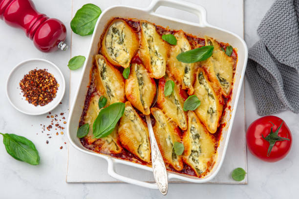

The fatty fat fat of all of stuffed shells!

Description
These stuffed shells have it's insides bursting out of it. Little riccota organ all over the place with bloody pasta sauce all over. Crispy noodle skin with green puke all over.
Ingredients
- Jumbo Shells
- Basil
- Riccota
- Pasta Sauce
- Mozzerella
- Ground beef if wanted
Steps
- First, half cook the Jumbo Shells
- Next, mix the basil, riccota, half of the mozzerella, and the ground beef if wanted.
- Then, put the mix in a blender and blend it up for a little. Then stuff the shells.
- Then, put some sauce in the bottom of the baking pan.
- After that, put the shells in and bake them
- Top with leftover basil and enjoy!